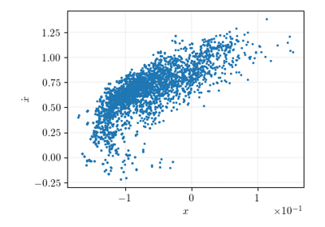
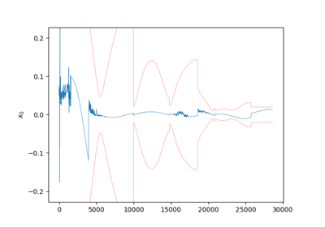
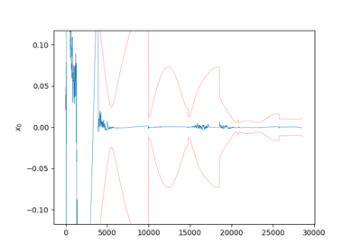
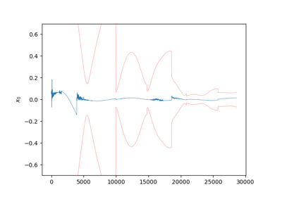
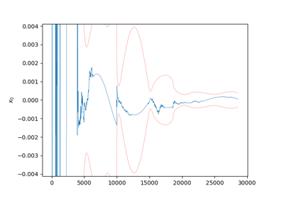
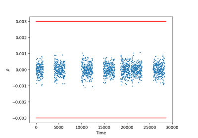
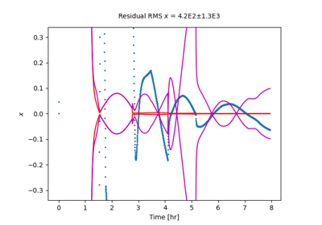

StatOD Examples Gallery
Below are the various filters available within this package.

Particle Filter Example

Kalman Filter with Stochastic Noise Compensation Example
Kalman Filter with Stochastic Noise Compensation Example

Unscented Kalman Filter Example
Unscented Kalman Filter Example

Square Root Information Filter Example
Square Root Information Filter Example

Kalman Filter with Smoother Example
Kalman Filter with Smoother Example

Kalman Filter with Dynamic Model Compensation Example
Kalman Filter with Dynamic Model Compensation Example

Consider Covariance Filter Example
Consider Covariance Filter Example